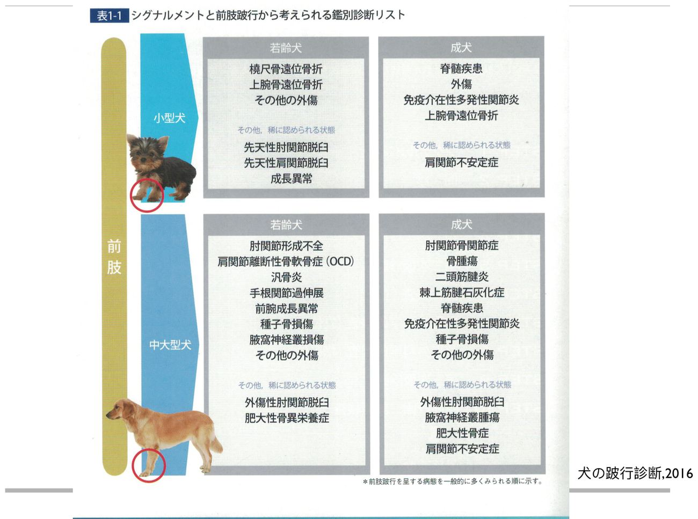
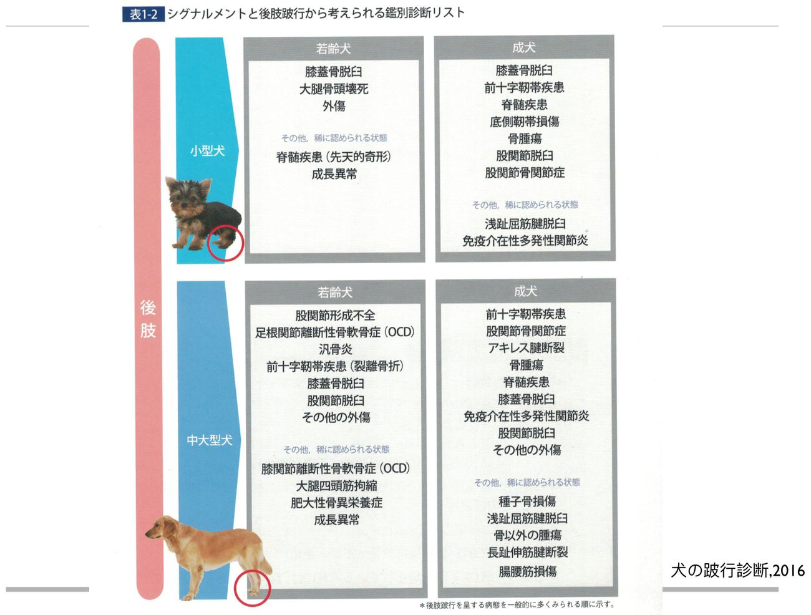
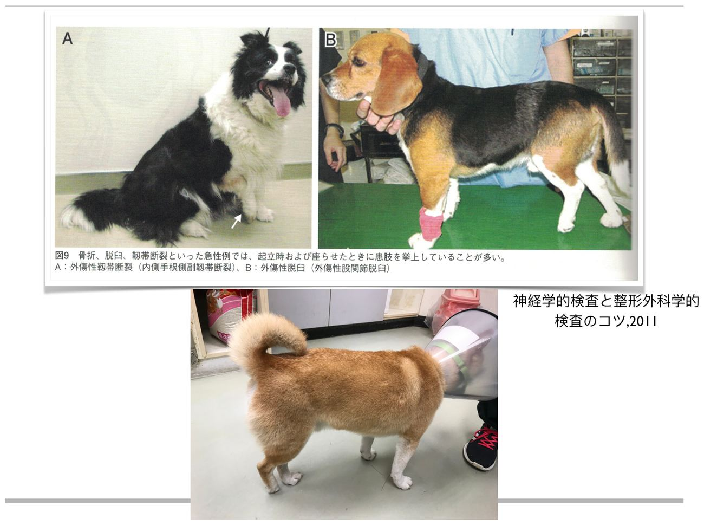
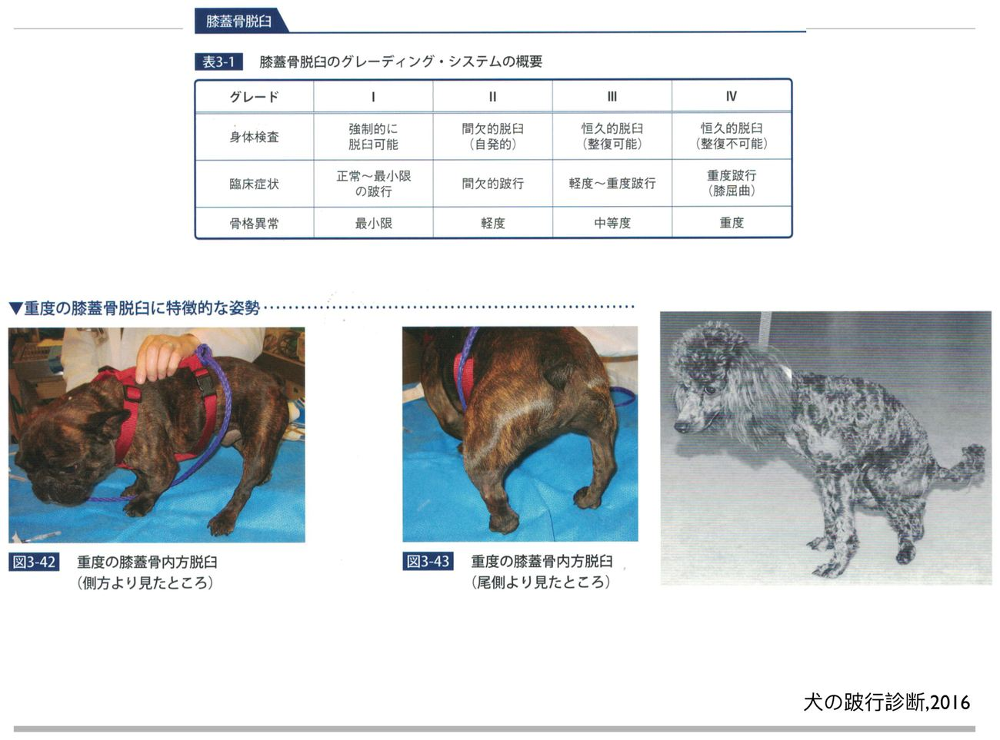

大方向與重點摘要
- 這章在講什麼
- 跛行（lameness）病患從病史 → 站姿與步態觀察 → ROM 與肌肉量 → 一般觸診 → 逐關節骨科特殊試驗 → 影像 → 關節液的完整流程（p.3）。目標有三個：功能診斷（機械性受限？疼痛？）、解剖診斷（病灶在哪個部位）、病因推測（先天、發育、外傷、發炎、其他系統、腫瘤）（p.5）。這份是期末範圍第 1 份講義，下半部的影像判讀與疾病在〈骨骼影像與骨科疾病〉頁。
- 為什麼重要
- 骨科病患幾乎都靠「年齡＋品種＋哪一肢＋哪個關節痛」就能縮到少數幾個診斷，再用 X 光確認。講義 p.12–15 把這件事整理成表：成長期小型／大型犬、前肢／後肢各有固定的好發疾病，所以觸診時每一個試驗其實都在驗證一個特定疾病（例如 Barden／Ortolani ＝ 髖關節發育不良、Campbell ＝ 肘關節韌帶、cranial drawer ＝ 前十字韌帶）。
- 這章要抓的重點
-
- 病史：DJD 是休息後跛、早上或濕冷天氣惡化；免疫性關節疾病中午前較嚴重、中午後稍改善，並常伴發燒、對稱性關節腫脹；膝蓋骨脫臼跛行時好時壞；急性＝骨折／韌帶斷裂，慢性＝續發 DJD（p.7、p.9）。
- 年齡分群：成長期前肢＝肩 OCD、肘發育不良（大型犬）、橈尺骨遠端骨折（小型犬）；成長期後肢＝髖發育不良 CHD（大型、兩側）、Legg-Calvé-Perthes（小型、單側）、膝蓋骨脫臼（小型內側、大型外側）；中老年＝續發 DJD、免疫性關節病、前十字韌帶斷裂（後肢）、腫瘤（p.12–13）。
- 站姿名詞：varus／valgus、endotorsion／exotorsion、antecurvatum／recurvatum、exorotation／endorotation、abduction／adduction、hyperextension／hyperflexion（p.23–26）。
- 跛行分級：Grade I 幾乎看不出 → II 有跛但仍負重 → III 不一定負重 → IV 完全不負重（p.29）；前肢痛會患肢著地時抬頭、健肢著地時低頭（falling on the healthy limb）（p.31）。
- 前肢特殊試驗：Campbell test（肘側副韌帶）、FMCP 壓痛、二頭肌腱試驗、肩關節伸展／抽屜／外展（正常約 30°，> 50° 不穩）（p.42–51）。
- 後肢特殊試驗：膝蓋骨脫臼 4 級、cranial drawer 與 tibial compression（前十字韌帶）、Barden（正常 1–2 mm；5–6 mm 或 > 6 mm 異常）、Ortolani、三角試驗與 thumb pinch（髖脫臼）（p.59–71）。
- 容易混淆
- varus／valgus 的方向：講義定義 varus ＝ 遠端往身體中線偏、valgus ＝ 遠端離開中線；後肢呈 X 形是「髖 varus、膝 valgus」，呈 O 形是「髖 valgus、膝 varus」（p.23），名稱是依偏斜的起點關節命名。Barden 與 Ortolani 都測髖關節鬆弛，但 Barden 看股骨大轉子被抬高幾 mm（量化），Ortolani 是感覺脫位／復位的「clunk」（p.67–69）。cranial drawer（屈曲與伸直都做）與 tibial compression（伸直、壓小腿肌）測的是同一條前十字韌帶，後者不用移動股骨與脛骨。
- 考試可能怎麼問
（推測；期末考古尚未取得） - 最可能出現：各試驗的名稱、做法、判讀（Barden、Ortolani、cranial drawer、tibial compression、Campbell、bicipital、shoulder abduction）；跛行分級；年齡＋品種＋肢體的鑑別診斷（配對或情境題）；站姿名詞定義。詳見第 11 節。
內容以老師講義為主體。標示「補充」的段落是講義以外的延伸（多為一般臨床骨科常識，用來讓疾病與試驗的原理講得通）；標示「推測」的是依講義強調處推測的出題方向。講義是日文書與英文書投影片的混合版，很多頁只有圖，本頁把圖中資訊用文字寫出來並附上截圖。點「p.N」會在右側開啟講義該頁。考試範圍以老師上課為準。
History
站姿＋步態
Physical exam
一般＋骨科試驗
Image／Joint fluid
病史 History
跛行的病史問什麼、不同病程分別提示什麼。
運動系統的組成與檢查流程理解
- 附肢部分（abaxial）：骨（骨幹 diaphysis、骨骺 epiphysis、骨突 apophysis、生長板、幹骺端 metaphysis、種子骨）、關節（含半月板）、肌腱、韌帶、肌肉；提供支撐、保護，讓動物站立與移動（p.2）。
- 中軸部分（axial）：椎體、椎關節、椎間盤、韌帶、肌腱、肌肉；保護脊髓，並經薦髂關節與後肢相連（p.2）。
- 流程（p.3）：History → Observation（stance and gait）→ Physical examination（ROM、muscle volume）→ General palpation → Orthopedic examination → Image → Joint fluid examination。
- 檢查要得到三種資訊（p.5）：功能診斷（機械性限制、疼痛過程）、解剖診斷（病灶位置）、病因（先天異常、發育疾病、外傷、發炎、其他器官系統異常、腫瘤）。
問診重點必考
| 問什麼 | 內容（講義） | 意義 |
|---|---|---|
| 何時開始、一天中的變化 | 起身後、剛跑出去、走碎石路、跳過圍欄才跛；起床時跛、走一走變好、運動過度後惡化，或散步時越走越嚴重（p.6） | 起身跛、走開後改善＝關節僵硬型（DJD 典型）；越走越嚴重＝活動相關疼痛 |
| 跛行發生的時間 | DJD：休息後的跛行，早上或濕氣重的壞天氣惡化；免疫性關節疾病：中午前較嚴重、中午過後稍改善（p.7） | 用來區分退化性與免疫性 |
| 病程型態 | 永久存在（always equally severe）、反覆（recurrent）、間歇（intermittent）、進行性（progressive）、游走（migrating，一處換一處或一肢換一肢）（p.8） | 游走性、反覆的跛行要想到免疫性或多關節疾病（補充） |
| 急性或慢性 | 急性：骨折、韌帶或肌腱斷裂；慢性：續發 DJD（p.9） | 外傷事件史 vs. 逐漸惡化 |
| 全身症狀與關節 | 免疫性關節疾病：發燒、對稱性關節腫脹、關節過度彎曲或過度伸展（p.9） | 發燒＋多關節對稱腫脹→先想免疫性（IMPA） |
| 膝蓋骨脫臼 | 跛行時好時壞（p.9） | 脫臼時才跛，復位後正常 |
| 年齡、品種、遺傳 | Age, breed, inherited disease（p.10） | 成長期大型犬多發育性疾病，見下一節 |
| 生活環境與運動量 | 導盲犬、警衛犬、警犬、家庭寵物；散步時間與距離（p.10） | 運動強度決定症狀被發現的時間 |
| 用藥 | NSAID、steroid（p.10）；p.16 還問「NSAID 與 steroid 哪一種使症狀改善」 | 對 NSAID 有反應＝疼痛／炎症性；服藥會掩蓋跛行，影響觀察（補充） |
p.16（日文書）列出的整套問診清單，可視為上表的細項：品種年齡性別、過去重大疾病或外傷、同血脈是否有同樣病例、症狀開始的原因、目前症狀、步行異狀、精神食慾、飲食、有無發燒嘔吐下痢、急慢性、散步時間距離有無改變、爬階梯或坡道是否異常、關節腫脹疼痛、四肢變形、是否逐漸惡化、一天哪個時段惡化、休息後與起身時是否痛、運動後是否惡化、天氣影響、使用藥物與營養品、家中是否鋪地板。
依年齡、體型、前後肢的鑑別診斷
看到「幾歲、大型還小型、前肢還後肢」就先縮出診斷清單，後面的觸診與 X 光再去驗證。
| 位置 | 年齡 | 講義列出的好發疾病（p.12–13） |
|---|---|---|
| 前肢 | 成長期 | 肩關節分離性骨軟骨炎（OCD）、肘關節發育不良（大型犬）、橈尺骨遠端骨折（小型犬）、先天性肩關節脫臼、先天性肘關節脫臼、尺骨遠端成長板早期閉鎖 |
| 中老年期 | 續發性 DJD、免疫性關節疾病（類風濕性關節炎、全身性紅斑狼瘡 SLE）、腫瘤等 | |
| 後肢 | 成長期 | 髖關節發育不良 CHD（大型犬、兩側）、股骨頭壞死 Legg-Calvé-Perthes（小型犬、單側）、膝蓋骨脫臼（小型犬內側；大型犬外側）、股骨遠端成長板骨折 |
| 中老年期 | 前十字韌帶斷裂、免疫性關節疾病、續發性 DJD、腫瘤等 |


關鍵疾病一句話解釋必考
下面是這份講義反覆出現的疾病，先用一句話記住「是什麼、誰會得、怎麼查」；完整的機制與 X 光表現在〈骨骼影像與骨科疾病〉。
| 疾病 | 一句話 | 對應的檢查 |
|---|---|---|
| 分離性骨軟骨炎 OCD | 大型犬成長期關節軟骨軟骨內骨化異常、軟骨增厚變脆，剝離成軟骨瓣（關節鼠），引起滑膜炎與疼痛；公：母約 3：1，約 50% 雙側（p.115–116） | 肩關節伸展疼痛（p.49）；X 光看缺損 |
| 肘關節發育不良 Elbow dysplasia | 包含 UAP（肘突起癒合不良）、FMCP（內側勾狀突起斷裂）、肘 OCD 三種；常雙側，造成嚴重 DJD 與慢性疼痛（p.118–119） | 肘屈曲外轉／內轉壓痛、Campbell test、CT 或關節鏡（p.42–44） |
| 髖關節發育不良 CHD | 大型犬、兩側，髖臼與股骨頭不密合、關節鬆弛，終致退化性髖關節病（p.13、p.123） | Barden、Ortolani（p.67–69） |
| Legg-Calvé-Perthes | 小型犬 4–10 月齡，股骨頭缺血性壞死，單側居多，肌肉萎縮、後伸髖關節劇痛、捻髮音（p.125–126） | 髖伸展疼痛（p.66）；X 光 |
| 內側膝蓋骨脫臼 MPL | 小型犬居多，分 4 級；常無症狀，要確認它真的是跛行原因（p.59、p.131） | 膝蓋骨觸診分級（p.59–61） |
| 前十字韌帶斷裂 Cranial cruciate ligament (CCL/ACL) rupture | 中老年後肢跛行最常想到的原因；關節腫脹、脂肪墊被往前推（p.13、p.134） | cranial drawer、tibial compression（p.63–64） |
| 免疫介導多發性關節炎 IMPA | 中高齡、發燒、對稱多關節腫脹、中午前較嚴重、跛行游走（p.7、p.9、p.138） | 多關節觸診＋關節液檢查（p.150） |
| 二頭肌腱鞘炎 Bicipital tenosynovitis | 中老年中大型犬，運動過度後前肢跛行逐漸惡化（p.48） | 二頭肌腱試驗（p.47–48）；超音波 |
站姿觀察與名詞 Observation of Stance
先遠看、不碰動物：站姿、負重、頭頸脊椎與四肢的相對位置。
- 觀察項目（p.17）：四肢的站姿、四肢與頭、脊椎的相對位置、各肢的負重。
- 日文書（p.20）的立位觀察要點：負重程度、變形（內外反）、左右對稱性（有無異常腫脹）、四肢長度、前後肢站立的寬度是否一致、外傷、knuckling（指背著地）。
- 視診重點（p.19）：急性、患肢抬起——骨折、脫臼、韌帶斷裂；慢性、患肢肌肉量減少（單側）——前肢兩側性疾病或韌帶損傷（前肢張開幅度小於後肢），後肢兩側性疾病則相反。
- 視診其他（p.22）：腕關節過度伸展、跗關節過度彎曲、髖關節發育不全的坐姿、膝關節腫脹造成後肢無法彎曲的坐姿。

站姿的名詞定義必考
| 名詞 | 講義定義 | 記法 |
|---|---|---|
| Varus（內翻） | 肢體的一部分在額面往身體中線偏斜（p.23） | 遠端靠向中線 |
| Valgus（外翻） | 肢體的一部分離開中線偏斜（p.23） | 遠端遠離中線 |
| X 形後肢 | 髖關節 varus、膝關節 valgus（p.23） | 以偏斜起點關節命名 |
| O 形後肢 | 髖關節 valgus、膝關節 varus（p.23） | 對照：膝蓋骨內側脫臼＝O 形、外側脫臼＝X 形（p.58） |
| Torsion | 骨骼的一部分或一根骨頭沿其長軸扭轉（p.25） | 骨本身的扭轉 |
| Endotorsion／Exotorsion | 長骨遠端向內（內側）／向外（外側）轉（p.25） | endo＝內、exo＝外 |
| Antecurvatum／Recurvatum | 向前彎／向後彎（p.25） | ante＝前、re＝後 |
| Rotation：Exorotation／Endorotation | 肢體在關節處沿長軸轉動；外轉／內轉（p.26） | 與 torsion 差在「關節轉」或「骨本身扭」 |
| Abduction／Adduction | 整條肢體往側邊離開中線／靠向中線（p.26） | ab＝離開、ad＝靠近 |
| Hyperextension／Hyperflexion | 關節過度伸展／過度彎曲，屬於異常的負重方式（p.26） | 如腕過伸、跗過彎（p.22） |
步行檢查與跛行分級 Gait & Lameness Scale
在不滑的地面看直線與圓周步行，並用四級量表記錄嚴重度。
怎麼做步行檢查理解
- 環境（p.27）：不滑的地板或水泥地；至少走 10 步以上，約 8–12 公尺距離。
- 步態週期：負重期（stance phase）與擺動期（swing phase）；一個步幅（stride）由接觸點（contact point）到離地點（takeoff point）（p.27–28）。
- 直線步行（p.30）：散步與快步；患肢負重時間較短。前肢異常：點頭運動，上下晃動程度由大到小為肩關節 > 肘關節 > 腕關節；後肢異常：腰擺動步行和兔子跳步行，常出現在成長期動物。
- 圓周步行：左右繞圈散步，患肢在圓心側時比較疼痛（p.30）。
- 特殊步行解析：force plate gait analysis、active-ROM（p.30）。
跛行分級 Lameness scale必考
| 級別 | 講義（p.29） | 白話 |
|---|---|---|
| Grade I | barely disturbed locomotion | 幾乎看不出來的跛行 |
| Grade II | locomotion disturbed but limb(s) still bearing weight | 看得出來，但患肢仍負重 |
| Grade III | lameness with limb(s) not always bearing weight | 患肢不一定每次都負重 |
| Grade IV | no weight bearing on limb(s) | 完全不負重（抬腳） |
為了減輕疼痛，動物會怎麼代償必考
- 一側前肢痛：把重心往尾側移——患肢負重時抬高頭，健肢負重時低頭，講義稱 ‘falling on the healthy limb’（p.31）。
- 兩側前肢痛：兩後肢往前踏到身體下方，造成背部拱起（kyphosis）（p.31）。
- 講義 p.32 的影片截圖是「常歩・前十字韌帶斷裂」的案例，p.37（10-1）是看肉球（pad）磨損的視診。
前肢跛行時「抬頭 ＝ 患肢著地」是考試愛問的方向（哪一側有問題）：頭往上抬的那一步，著地的就是患肢；後肢跛行則看骨盆（患肢著地時髖部下沉較少），這是一般臨床常識，不在這份講義。
關節活動度與肌肉量 ROM & Muscle Volume
兩側互相比較，量化「關節能動多少」與「肌肉剩多少」。
- ROM 測量（p.33）：兩側互相比較，測 3 次取平均值（量角器）。ROM 增大＝肌腱或韌帶斷裂；ROM 減少＝DJD 或關節疾病。
- 講義附 Labrador Retriever 各關節 ROM 平均值（Millis, Canine Rehabilitation & Physical Therapy, 2004）：腕 伸展 196 ± 2°／屈曲 32 ± 2°；肘 165 ± 2°／36 ± 2°；肩 165 ± 2°／57 ± 2°；跗 164 ± 2°／39 ± 2°；膝 162 ± 3°／42 ± 3°；髖 162 ± 3°／50 ± 3°（p.33，圖中數值，以原圖為準）。
- 肌肉量測定（p.35）：同一人、同一位置測量才能知道時間變化；患肢肌肉量會低於正常肢。測量部位（Gulick II 皮尺）：肱骨遠端 1/3、橈骨近端 1/4、股骨近端 1/4、脛骨近端 1/4。
一般觸診與檢查表單
兩側肢體同時比較，由遠端往近端、由後肢到脊椎再到前肢。
- 一般觸診（p.36）：前後肢以及脊椎；兩側肢體同時進行、左右互相比較，由遠端肢體往體幹部觸診；順序為後肢 → 脊椎 → 前肢。
- 講義 p.37 的 10-1 影片截圖是肉球（pad）的觀察：磨損位置能反映動物平常怎麼負重。
站姿異常與可能的疾病理解
| 肢別 | 講義列出的異常（p.38–39） |
|---|---|
| 後肢 | 跗關節：骨折、脫臼、肌腱斷裂、腫脹、發燒；脛骨：骨折，或脛骨 varus 合併外側膝蓋骨脫臼；膝關節：前十字韌帶斷裂、OCD、O 形（膝 varus）、X 形（膝 valgus）、腫脹；股骨骨折、髖關節發育不良、髖關節脫臼 |
| 前肢 | 腕關節：腫脹、骨折、半脫位、過度屈曲；尺骨遠端留存性軟骨核；肘關節：FMCP、UAP、OCD、骨折、腫脹、腫瘤；肱骨骨折、骨肉瘤；肩關節：OCD、脫臼、二頭肌腱鞘炎 |
骨科學觸診紀錄表看過
講義 p.40（前肢）與 p.53（後肢）是日文書的檢查紀錄表，左（L）右（R）各勾「有／無」或「＋／−」。每一欄都對應下兩節的一個動作，可以當作「檢查時別漏掉什麼」的清單：
| 肢別 | 表單項目 |
|---|---|
| 前肢（p.40） | 肢端傷口、皮膚炎、化膿；腕關節的可動性異常；腕關節可動區域限制；前臂變形；前臂疼痛；肘關節內外側副韌帶損傷；肘關節伸展與屈曲時疼痛；內側勾狀突起壓痛；肘關節可動區域限制；二頭肌腱試驗；肩關節伸展時疼痛；肩關節外轉角度（> 50°） |
| 後肢（p.53） | 肢端傷口、皮膚炎、化膿；跗關節可動性異常；跗關節可動區域限制；阿基里斯腱損傷或移位；膝蓋骨脫臼、方向（內／外）、Grade；膝關節內外側副韌帶損傷；Cranial drawer；Tibial compression；膝關節屈伸時的 click 音；Barden；Ortolani；髖關節伸展時疼痛；三角試驗／Thumb pinch |
前肢逐關節檢查（腕、肘、肩）
從遠端往近端：腕 → 肘（Campbell、FMCP）→ 肩（二頭肌腱、伸展、抽屜、外展）。
腕關節 Carpal joint理解
- 結構：內側與外側側副韌帶（p.41）。
- 做法：伸展腕關節並做外展（abduction）與內收（adduction）；ROM 屈曲時肉球可碰到皮膚、伸展約 180° + 10–20°。
- 檢查：過度伸展、脫臼、疼痛、韌帶斷裂、ROM 下降。
肘關節 Elbow joint必考
- ROM：屈曲時指針與中指（兩指）能放進縫隙；伸展 170–180°（p.42）。
- 外傷性韌帶斷裂（內外側側副韌帶）、疼痛、ROM 下降。
- Campbell test：肘與腕都屈曲 90°，把腕向外（回外）與向內（回內）旋轉。依講義圖說（p.43）：正常犬前臂外旋約 45°，明顯超過此角度＝內側肘側副韌帶損傷；正常內旋約 70°，外側肘側副韌帶損傷時可到約 140°。
Campbell test 在臨床上主要用來評估肘關節側副韌帶是否鬆弛或斷裂。講義中的 45°／70° 是正常犬的旋轉角度；左右兩側比較也很重要（補充）。
FMCP 壓痛試驗（內側勾狀突起斷裂）必考
- 情境：大型犬、成長期（講義此頁寫 4–7 個月）、前肢跛行（p.44）；疾病描述頁寫 7–10 個月齡（p.119），兩處數字不同，兩者都記。
- 做法：肘關節彎曲 90°，在肱骨內側髁遠端一指寬、一個小凹陷處施壓，同時外旋與內旋前臂；有疼痛即陽性（p.44–45）。
- 確診：CT 或關節鏡（FMCP 在一般 X 光不一定看得清楚，見 疾病各論）。
二頭肌腱試驗 Bicipital tendon test必考
- 相關結構：內外側肩肱韌帶（glenohumeral ligaments）、二頭肌腱（biceps tendon）、橫向肱骨韌帶（transverse humeral retinaculum）；疾病＝二頭肌腱鞘炎（p.47）。
- 好發：中老年、中大型犬；運動過度，進行性發炎與跛行，運動後更嚴重（p.48）。
- 做法：肘關節伸展 + 肩關節屈曲（用力），同時在肱骨內側壓二頭肌腱；兩前肢都做、比較（p.48）。
肩關節 Shoulder joint必考
後肢逐關節檢查（跗、膝、髖）
跗關節與阿基里斯腱 → 膝蓋骨與前十字韌帶 → 髖關節鬆弛與脫位。
跗關節與阿基里斯腱理解
- 跗關節（p.54）：內外側側副韌帶（長部與短部）、長足底韌帶（long plantar ligament）；做法＝最大伸展時外展與內收、屈曲 90°時外展與內收；檢查 ROM、屈伸、疼痛、捻髮音（crepitus）。
- 阿基里斯腱（p.55–56）：主要由腓腸肌腱（gastrocnemius）與淺趾屈肌腱（superficial digital flexor）組成；站立時觀察跗關節角度；觸摸腱的活動性並加壓確認張力。部分斷裂時（淺趾屈肌腱仍完整）足底面尚可著地但跗關節下沉；完全斷裂時足底著地、蹠行（plantigrade）。
膝蓋骨脫臼 Patellar luxation必考
| 級別 | 講義（p.59，日文書分級） |
|---|---|
| Grade 1 | 用手壓可以脫臼，放開後回到正常位置；幾乎無跛行 |
| Grade 2 | 有時候會自行脫臼又自行回到正常位置；脫臼時腳會抬起，呈跳躍樣步行 |
| Grade 3 | 時常脫臼，可用手移動到正常位置，手放開後又再度脫臼；脛骨內轉，步行困難，可以負重，觸診輕度疼痛 |
| Grade 4 | 時常脫臼，無法用手移動到正常位置；步行緩慢，可以負重，輕度疼痛 |
- 內側脫臼 ＝ O 形後肢；外側脫臼 ＝ X 形後肢（p.58）。小型犬多內側、大型犬多外側（p.13）。
- 觸診手法（p.60–61）：偵測外側脫臼與內側脫臼是用不同方向推膝蓋骨的手法；先屈伸膝關節，確認膝蓋骨是否在滑車溝（trochlear groove）內，再用手推看是否脫位（補充）。
- 脛骨遠端骨折或脛骨 varus 合併外側膝蓋骨脫臼要一併考慮（p.38）。

前十字韌帶 Anterior（Cranial）cruciate ligament必考
- 前十字韌帶在屈曲與伸展時張力不同（p.62 表 2）：屈曲位前十字緊張、外側副韌帶鬆弛；伸展位前十字、內側副韌帶緊張，外側副韌帶也緊。
- Cranial drawer test（p.63）：屈曲與伸展兩種姿勢都做；一手拇指與食指固定股骨（找髕骨、種子骨 sesamoid），另一手固定脛骨（脛骨粗隆 tibial tuberosity、腓骨頭 fibular head），把脛骨往前拉，前移＝陽性。
- Tibial compression test（p.64）：膝關節伸直；一手放在髕骨與髕韌帶、脛骨粗隆，另一手握跗骨並讓跗關節最大屈曲但不讓膝關節屈曲（壓小腿肌肉，使脛骨前移）；觀察脛骨粗隆是否前移。
- X 光與疾病：見〈骨骼影像與骨科疾病〉前十字韌帶斷裂。
臨床上兩個試驗都要在鎮靜或麻醉或動物非常放鬆時才準確；兩個試驗都陰性不能完全排除前十字韌帶部分撕裂。側副韌帶試驗（p.65）也是在膝屈曲與伸展時對內外翻施力，確認內外側側副韌帶。
髖關節 Hip joint必考
| 試驗 | 條件與做法 | 判讀 |
|---|---|---|
| 髖伸展（p.66） | 站立或側躺；一手放骨盆背側，另一手握股骨慢慢往尾側伸展 | 伸展與外旋時疼痛（Legg-Calvé-Perthes、DJD 等） |
| Barden test（p.67） | 全身麻醉、側躺；6–8 週齡幼犬；拇指放在大轉子，抬起股骨體，看大轉子被推開多少 | 正常 1–2 mm；異常 5–6 mm 或 > 6 mm（鬆弛） |
| Ortolani test（p.68–69） | 全身麻醉、側躺；股骨與骨盆成 90°，加壓後髖關節外展 | 半脫位（subluxation）的股骨頭復位（reduction）時有感覺（clunk）→ 陽性 |
| 三角試驗（p.70） | 觸摸坐骨結節、髂骨嵴、大轉子三點構成的三角形 | 正常三點關係；髖脫臼時三點位置改變（大轉子往頭背側移位） |
| Thumb pinch test（p.71） | 拇指放在大轉子與坐骨結節之間的位置 | 用來確認髖關節是否脫位（拇指推壓下大轉子是否被往外推） |
Barden 與 Ortolani 的目的是早期評估髖關節鬆弛（hip laxity），也就是髖關節發育不良的篩檢；這兩個試驗都要在麻醉下做，講義 p.67 特別註明 Barden 用在 6–8 週齡幼犬。
考試方向（推測，期末考古尚未取得）
目前沒有這份講義的考古或老師提示，以下是依講義強調處與臨床邏輯推測的出題方向，不是官方範圍。拿到期末考古後會補上。
| 可能考法（推測） | 答題重點 |
|---|---|
| 跛行的病史要問什麼、DJD 與免疫性關節炎的跛行時間 | DJD 休息後跛、早晨與濕冷天氣惡化；免疫性中午前較嚴重、中午後稍改善，常有發燒與對稱性關節腫脹 |
| 跛行分級四級 | I 幾乎無；II 有跛仍負重；III 不一定負重；IV 完全不負重 |
| 前肢跛行的頭部代償動作 | 患肢著地時抬頭、健肢著地時低頭；雙側前肢痛 → 背拱起（kyphosis） |
| varus／valgus／torsion／rotation 名詞 | varus 往中線、valgus 離中線；torsion 骨本身扭轉、rotation 關節處轉動；O 形＝膝 varus＝內側膝蓋骨脫臼 |
| 髖關節鬆弛試驗的做法與數值 | Barden：麻醉側躺、拇指抵大轉子、抬股骨體；正常 1–2 mm、5–6 或 > 6 mm 異常。Ortolani：90° 加壓＋外展，聽／感覺復位 |
| 前十字韌帶的兩個試驗 | cranial drawer（屈曲、伸展都做、前拉脛骨）；tibial compression（膝伸直、跗最大屈曲、看脛骨粗隆前移） |
| 膝蓋骨脫臼 1–4 級 | 1 壓可脫、放開復位；2 偶自行脫臼、跳躍步行；3 常脫臼可手動復位但放開又脫、脛骨內轉；4 常脫臼且無法手動復位 |
| 肩、肘、二頭肌腱的特殊試驗 | Campbell（外旋 45°／內旋 70°）、FMCP 壓痛（肘 90°、肱骨內側髁遠端一指寬）、二頭肌腱（肘伸展＋肩屈曲＋壓肱骨內側）、肩外展（30° 正常、> 50° 不穩） |
| 年齡與品種的鑑別診斷情境題 | 用第 3 節的表：4–10 月齡小型犬後肢單側跛行＋後伸痛＝Legg-Calvé-Perthes；大型犬 6 月齡兩側後肢＝CHD；中老年後肢＝前十字韌帶 |
練習題 Practice Quiz
14 題，答案預設隱藏；先自己寫再點開核對。數字以講義為準。
(A) 錯：Grade I 是幾乎看不出來。(B) 錯：Grade II 是有跛，但患肢仍負重。(C) 對：Grade III ＝ lameness with limb(s) not always bearing weight（p.29）。(D) 錯：Grade IV 是完全不負重。
(A) 錯：方向相反。(B) 對：把重心往尾側移以減輕患肢負重，患肢負重時抬頭、健肢負重時低頭，稱 falling on the healthy limb（p.31）。(C) 錯：雙側前肢痛才是兩後肢前踏到身體下方，造成背拱起（kyphosis）。(D) 錯：沒有此代償。
講義 p.51：Under anesthesia；normal 30°，larger than 50° is shoulder joint instability；兩側都做，進一步用關節鏡確認。
Grade 1：用手壓可脫臼，放開後回到正常位置，幾乎無跛行。Grade 2：偶爾自行脫臼又自行復位，脫臼時抬腳、跳躍樣步行。Grade 3：時常脫臼，可用手移回正常位置，放開後再度脫臼；脛骨內轉、步行困難、可負重、輕度疼痛。Grade 4：時常脫臼且無法用手移回；步行緩慢、可負重、輕度疼痛（p.59）。